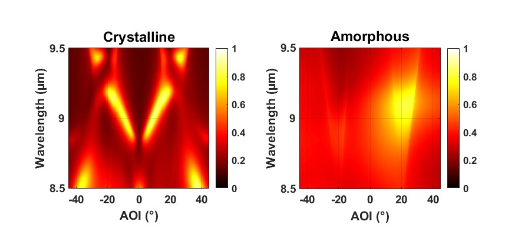

Our research focuses on nanostructured materials and their interactions with infrared thermal radiation.
We design these materials to control and tune their thermal emission properties …
What We Do
The main thrust of our current work involves active metasurfaces …
Recent News
- Dec 12, 2024: Prof. Ghanekar receives the Maryland Industrial Partnerships Grant ($100,000) …